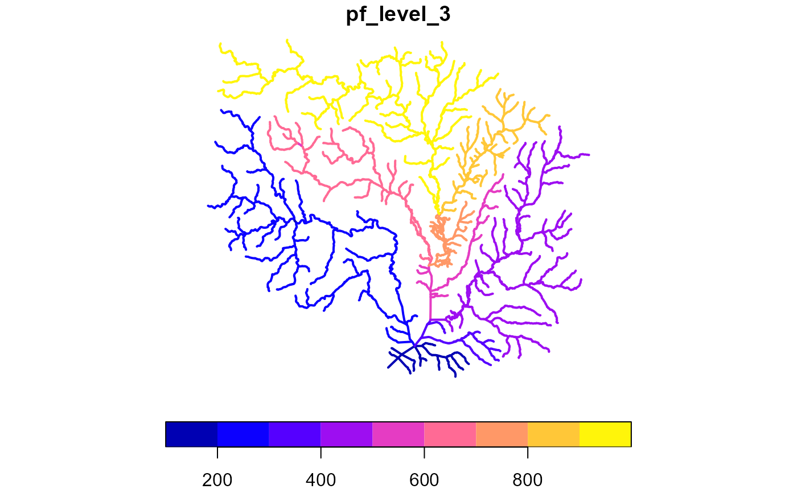
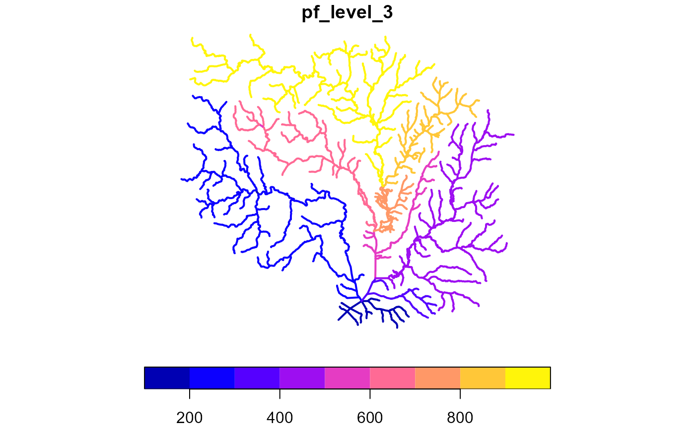

Determines Pfafstetter codes for a dendritic network with total drainage area, levelpath, and topo_sort attributes. Topo_sort and levelpath attributes must be self consistent (levelpath values are the same as the outlet topo_sort value) as generated by add_levelpaths.
Usage
add_pfafstetter(x, max_level = 2, status = FALSE)
# S3 method for class 'data.frame'
add_pfafstetter(x, max_level = 2, status = FALSE)
# S3 method for class 'hy'
add_pfafstetter(x, max_level = 2, status = FALSE)Arguments
- x
data.frame network compatible with hydroloom_names.
- max_level
integer number of levels to attempt to calculate. If the network doesn't have resolution to support the desired level, unexpected behavior may occur.
- status
boolean if status updates should be printed.
Examples
x <- sf::read_sf(system.file("extdata/new_hope.gpkg", package = "hydroloom"))
x <- add_toids(x)
pfaf <- add_pfafstetter(x, max_level = 2)
plot(pfaf["pf_level_2"], lwd = 2)
 # \donttest{
if(require(nhdplusTools)) {
# uses tempdir for example
work_dir <- nhdplusTools::nhdplusTools_data_dir(tempdir())
try(
source(system.file("extdata/nhdplushr_data.R", package = "nhdplusTools"))
)
if(exists("hr_data")) {
x <- hy(hr_data$NHDFlowline)
x <- add_toids(x)
x <- dplyr::select(x, id, toid, da_sqkm)
#' add terminal_id -- add in function?
x <- sort_network(x, split = TRUE)
x$total_da_sqkm <- accumulate_downstream(x, "da_sqkm")
x$name <- ""
x <- add_levelpaths(x, name_attribute = "name", weight_attribute = "total_da_sqkm")
x <- add_pfafstetter(x, max_level = 3)
plot(x["pf_level_3"], lwd = 2)
pfaf <- add_pfafstetter(x, max_level = 4)
hr_catchment <- dplyr::left_join(hr_data$NHDPlusCatchment,
sf::st_drop_geometry(pfaf), by = c("FEATUREID" = "id"))
colors <- data.frame(pf_level_4 = unique(hr_catchment$pf_level_4),
color = sample(terrain.colors(length(unique(hr_catchment$pf_level_4)))))
hr_catchment <- dplyr::left_join(hr_catchment, colors, by = "pf_level_4")
plot(hr_catchment["color"], border = NA, reset = FALSE)
plot(sf::st_geometry(x), col = "blue", add = TRUE)
} else {
message("nhdplusTools > 1.0 required for this example")
}
}
#> Loading required package: nhdplusTools
#>
#> Attaching package: 'nhdplusTools'
#> The following object is masked from 'package:hydroloom':
#>
#> make_node_topology
#> defaulting to comid rather than permanent_identifier

# \donttest{
if(require(nhdplusTools)) {
# uses tempdir for example
work_dir <- nhdplusTools::nhdplusTools_data_dir(tempdir())
try(
source(system.file("extdata/nhdplushr_data.R", package = "nhdplusTools"))
)
if(exists("hr_data")) {
x <- hy(hr_data$NHDFlowline)
x <- add_toids(x)
x <- dplyr::select(x, id, toid, da_sqkm)
#' add terminal_id -- add in function?
x <- sort_network(x, split = TRUE)
x$total_da_sqkm <- accumulate_downstream(x, "da_sqkm")
x$name <- ""
x <- add_levelpaths(x, name_attribute = "name", weight_attribute = "total_da_sqkm")
x <- add_pfafstetter(x, max_level = 3)
plot(x["pf_level_3"], lwd = 2)
pfaf <- add_pfafstetter(x, max_level = 4)
hr_catchment <- dplyr::left_join(hr_data$NHDPlusCatchment,
sf::st_drop_geometry(pfaf), by = c("FEATUREID" = "id"))
colors <- data.frame(pf_level_4 = unique(hr_catchment$pf_level_4),
color = sample(terrain.colors(length(unique(hr_catchment$pf_level_4)))))
hr_catchment <- dplyr::left_join(hr_catchment, colors, by = "pf_level_4")
plot(hr_catchment["color"], border = NA, reset = FALSE)
plot(sf::st_geometry(x), col = "blue", add = TRUE)
} else {
message("nhdplusTools > 1.0 required for this example")
}
}
#> Loading required package: nhdplusTools
#>
#> Attaching package: 'nhdplusTools'
#> The following object is masked from 'package:hydroloom':
#>
#> make_node_topology
#> defaulting to comid rather than permanent_identifier

 # }
# }